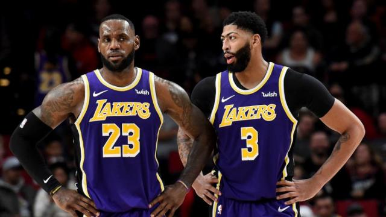

História dos lakers
O Los Angeles Lakers é uma franquia e também um time de basquete da NBA (National Basketball Association) com sede em Los Angeles, Califórnia. A equipe foi fundada em 1947, em Minneapolis, onde recebeu seu nome - em uma clara referência aos lagos da cidade [3] - e ainda cinco títulos da liga. Em 1960, mudou-se para atual cidade por causa da queda de público no ginásio. No fim dos anos 1970 e no começo dos anos 1980, a popularidade do Lakers cresceu, tornando-se uma das franquias de maior sucesso, além de ser a segunda com maior número de títulos, 16, perdendo apenas para o Boston Celtics, com 17. A equipe ainda conta com 56 aparições em playoffs, 33 títulos da Divisão do Pacífico e 31 títulos da Conferência Oeste[4] A formação californiana é detentora de alguns recordes da Liga. É a que possui maior número de vitórias da liga, mais de 3000,[5] com a maior porcentagem de vitórias e mais aparições em finais (31).[6] O Lakers também é o time das ligas norte-americanas que mais teve vitórias consecutivas (33), na temporada 1971-72.[7]